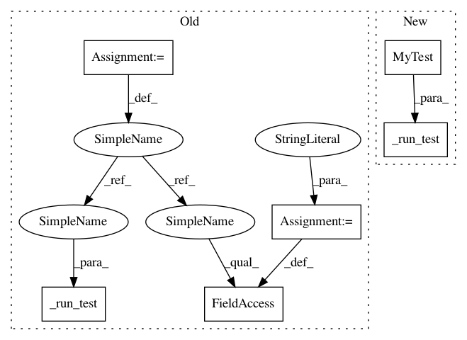

ac9081f85e0f54b0830b7f05593955a837eba7ce,unittests/test_pipeline.py,TestRegressionTest,test_sourcesdir_build_system,#TestRegressionTest#,285
Before Change
self._run_test(test)
def test_sourcesdir_build_system(self):
test = rfm.RegressionTest()
test._prefix = "unittests/resources/checks"
test.build_system = "Make"
test.sourcepath = "code"
test.executable = "./code/hello"
test.local = True
test.valid_systems = ["*"]
test.valid_prog_environs = ["*"]
test.sanity_patterns = sn.assert_found(r"Hello, World\!", test.stdout)
self._run_test(test)
def test_sourcesdir_none_generated_sources(self):
test = rfm.RegressionTest()
test._prefix = "unittests/resources/checks"
After Change
self.sanity_patterns = sn.assert_found(r"Hello, World\!",
self.stdout)
self._run_test(MyTest())
def test_sourcesdir_none_generated_sources(self):
@fixtures.custom_prefix("unittests/resources/checks")
class MyTest(rfm.RegressionTest):
In pattern: SUPERPATTERN
Frequency: 5
Non-data size: 6
Instances
Project Name: eth-cscs/reframe
Commit Name: ac9081f85e0f54b0830b7f05593955a837eba7ce
Time: 2020-02-25
Author: karakasis@cscs.ch
File Name: unittests/test_pipeline.py
Class Name: TestRegressionTest
Method Name: test_sourcesdir_build_system
Project Name: eth-cscs/reframe
Commit Name: ac9081f85e0f54b0830b7f05593955a837eba7ce
Time: 2020-02-25
Author: karakasis@cscs.ch
File Name: unittests/test_pipeline.py
Class Name: TestRegressionTest
Method Name: test_sourcesdir_none_run_only
Project Name: eth-cscs/reframe
Commit Name: ac9081f85e0f54b0830b7f05593955a837eba7ce
Time: 2020-02-25
Author: karakasis@cscs.ch
File Name: unittests/test_pipeline.py
Class Name: TestRegressionTest
Method Name: test_compile_only_warning
Project Name: eth-cscs/reframe
Commit Name: ac9081f85e0f54b0830b7f05593955a837eba7ce
Time: 2020-02-25
Author: karakasis@cscs.ch
File Name: unittests/test_pipeline.py
Class Name: TestRegressionTest
Method Name: test_sourcesdir_none_generated_sources
Project Name: eth-cscs/reframe
Commit Name: ac9081f85e0f54b0830b7f05593955a837eba7ce
Time: 2020-02-25
Author: karakasis@cscs.ch
File Name: unittests/test_pipeline.py
Class Name: TestRegressionTest
Method Name: test_run_only_sanity